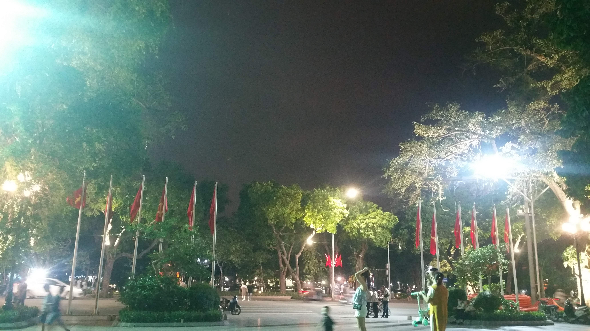
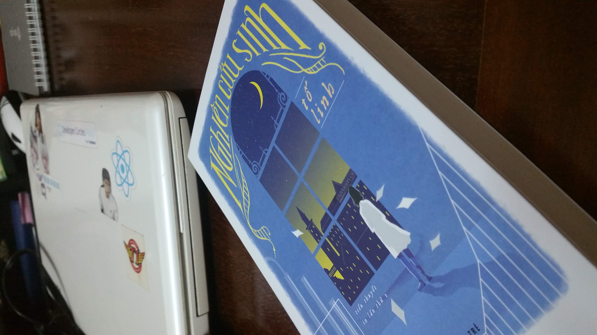
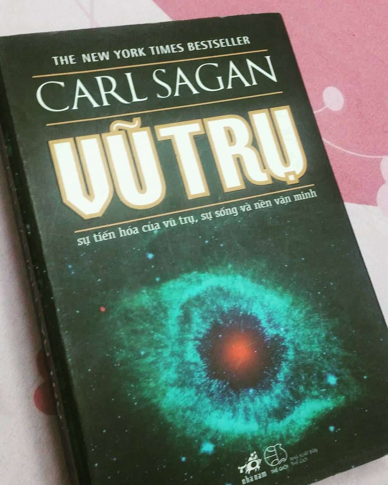
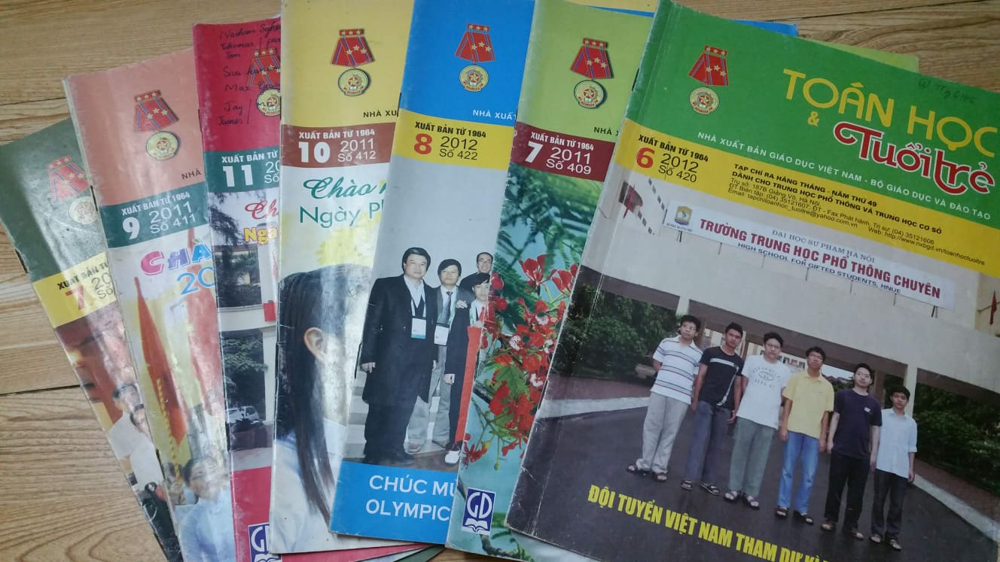
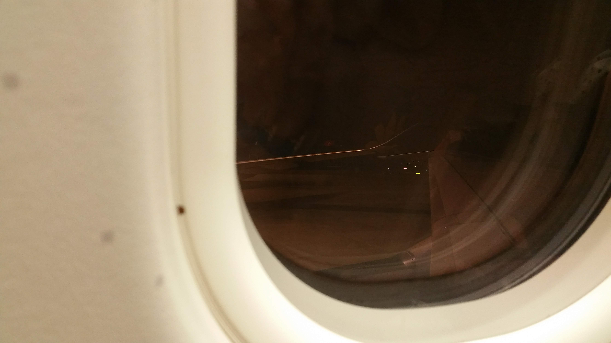
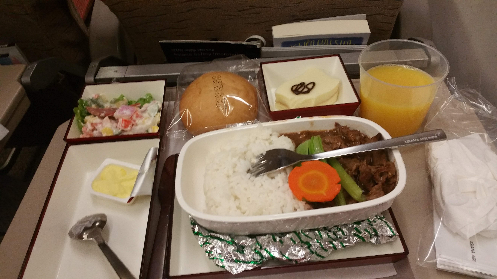
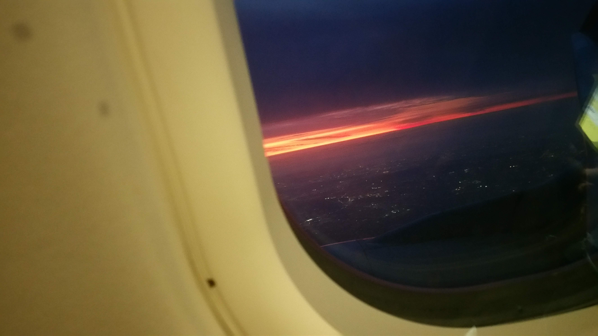
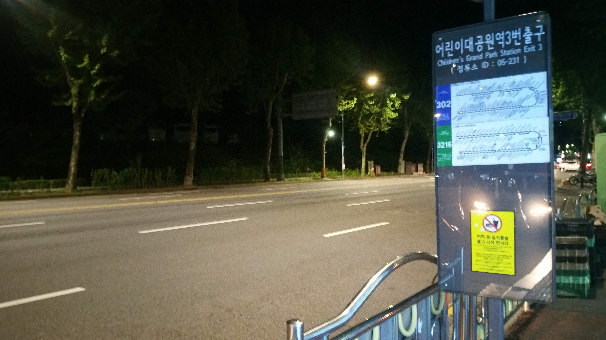

I decided to go to Korea in 5th May. Exactly, my first semester began at early of the March, but my family and i were really afraid of the Virus Corona 19, we delayed my flight several times. Honestly, i have not usually gone out far from home, =)). The farrest travel i have taken is the trip from Ha Noi to Ho Chi Minh to participate a conference in IT-ET. It was the first trip i have taken alone, a little scared, but i have my aunts there and then i was not scared any more. However, trying something new and going out far from home are things i am so afraid of. This trip made me and my family really nervous. They were afraid that i was so gentle, kind that everyone could treat me. To me, i was so afraid of the airplane falling down, kkkk.=))
The day before D-day i went to Hoan Kiem Lake where i love the most in Ha Noi. I have had a lot of memories there. Everytime i have had free time, i only go to there with my friends.

It is so lucky in my life that i have lots of close-knit friends. They are friends who are same age as me. Some of them are younger than me and call me "My dear old sister". In my mind, my studying oversea is same old days of mine, i think it is normal to me. I can be easy to book a ticket to come back my homeland in 4 hours, but by somehow, my friends talked to me so much before my going. One of my friends gave me a gift that made me a shock, just because in my mind he was childish and nothing in his mind, he minght not miss me much. However, he might miss me after all. Love you guys.My family are full of members being singular. We rarely express our feeling towards others. We just talk a few words with each other if something needs being discussed. we have rules that can not be broken. Maybe, i should have a blog about this strange later. I could book the flight soon in March, but my family said "No". One of the reasons is that they were afraid of that i would be too weak to fight against the Virus Covid 19. One reason being more important than that is that they wanted me to get married. kkk. It was so funny, because i even have not had a boyfriend or dated before, and they wanted me to get married, how??? i should marry to who??. By the way, after all my persuation, i could go out alone and do what i love. My family have protected me the whole of my life, which has made me see the world in pink eyes, and now the world is still pink with me. =)).
i hoped to bring with me all my book case, but i could not, i just brought 2 books of them. One is a novel about a young girl who is a researcher in Biology. One is a book of all the time about universes "Cosmo".

It will be a long time to see these guys again "Maths and Youth" that i collected when i was 15 years old. I just love Maths when i want to dive deeply into some topics i like, kkk. The subjects i liked most when i was in high school were Physics and English that was reason why i could be in the team who participated in the examination of Province for gifted student in English subject, and got A grade in Physic in University. Now, i forgot what i learned in English and Physics hahaha. It has been 5 years i have not learned English.

It was the first time i took a long flight. I was so afraid of just one thing that the airplain would crash and fall down, =)). I was too norvous to eat something before the fight. This was when the flight almost took off.

I was really hungry in the mid of the flight period. Luckily, Asiana Airline served a wonderful meal that i could eat very well. I got an airplane-sick and felt so tired when the fight was in progress. It was still a lucky when i was next to a Korean kind guy, he helped me a lot. When i saw the new land where i would live in 2 next years, i ended my tired feeling. The light in early in the morning was so fantastic. I loved this land from that second.

The Incheon Airport was really big that i thought i could lose my way, but it was not, because i followed the man who had helped me on the flight. I was done to get to the health check pot. My life was sometimes full of dark dots when i had some troubles with the contact. It was always me, everytime i have had to wait for a long time, i would get the reduce of blood pressure. I thought i could fall down at that time, then a man who was supporting me let me sit down near him and wait in a special area. After having waited in 3 hours, i could go to the house where i would get the isolation period.
Everyone thought that i would cry all the time of isolation period, but no, i was happy because i had something good to eat. My weight increased 3 kg.
Over 12AM of the day i could go out, i went out and brought all my luggages. I never went out so late like that before, so i was so afraid of meeting some bad men who can murder me kkk. I waited at a bus stop station in scary feeling.

My labmates went there to pick me up, kkkk, just because i was really afraid of murder, kidnap. In the following day, i was so hard to bring all my luggages to my new home. I did not have wifi to search the map, so i went as my hunch. Luckily, my hunch was true, i went to the right way. I had no close-knit friends to help me rent a house, i did not like live with the men i was not close to, so i contacted a goshiwon to live in a few first months. Fortunately, the host could speak in English influently, then i loved to live there. I met some younger sisters intersting there, then i have not had thinking of moving to new house.
In a few first days, i thought that i could adapt so well in here, but i was wrong. I have loved the weather here, but the arbitrary change of the weather could make me get sick. Because I am strongly allergic to weather's change. I would get stronger, hihi.
I will tell other stories in next blogs, bye, hi. =)).
Tóm gọn cho những ông không muốn đọc cái giọng điệu tiếng Anh dài dòng của tui thì tóm gọn như này.
Tui đã dự định đi qua thế giới mới của tui từ tận tháng 3 hay tháng 4 gì đó, ấy vậy mà gia đình tui sợ tui mắc bệnh bên đó, bắt tui ở nhà yên ổn làm công ăn lương, lấy chồng. Cơ mà sự thật là, chồng đâu mà lấy, khi mà tui chưa bao h có người yêu hay hẹn hò. Sau tất cả, rốt cuộc đầu tháng 5 tui cũng đặt được lịch để qua. Bạn cùng lab sang trước tui tận một tháng, còn tui cứ lề mề, sau hẳn một tháng luôn.
Từ nhỏ tới lớn, thế giới của tui toàn một màu hồng do được gia đình bao bọc quá kĩ, kakkaka. Lần đi xa nhất của tui, là chuyến đi một mình vào miền Nam để báo cáo bài nghiên cứu của tui tại đó. Mà hồi đó, tui ở nhà dì tui trong đó nên thấy bình thường, không sợ lắm. Còn lần này, lần đầu tiên đi xa mà lâu thế bằng máy bay, tui sợ rơi máy bay các ông ạ. Tui bồi hồi tới mức, không cả ăn được gì trước đó. May thay, đồ ăn trên máy bay cũng hẳn hoi để tôi có thể ăn được. Và tui bị say máy bay, may mà có ông anh người Hàn ngồi cạnh chỉ dẫn, giúp các kiểu, không chắc tôi ngỏm.
Cái cảm giác, ngủ một giấc, sớm dậy, trời tảng sáng, nhìn xuống bên dưới là cả một vùng đất tràn ngập ánh đèn, trời thì tranh sáng tranh tối, đẹp đến lạ kì. Vậy là tôi biết, đây sẽ là người tôi yêu trong 2 năm tới đây. Tui nguyện sẽ toàn tâm toàn ý bên người. kkkk. Thực ra là yêu cái đề tài nghiên cứu của tui đấy, rồi yêu cả đất nước này luôn.
Tui từng nghĩ, số tui nhọ, tui sẽ lạc ở sân bay, nhưng không, tui cứ đi theo ông anh người Hàn tốt bụng để ra chỗ kiểm tra sức khỏe. Vâng, đến khâu liên lạc người dám hộ, sáng sớm ra, thầy tui ngủ cho đẫy con mắt, mà không để ý điện thoại làm tui ngồi đợi cả 3 tiếng đồng hồ, và tui bị tụt huyết áp. May thay thằng bé làm kiểm tra sức khỏe tại đó cho tui vào ngồi gần chỗ nó, không là tui dẹo tại chỗ rồi.
Mọi người nghĩ tui sẽ bù lu bù loa khi ở một mình, nhưng không, tui bình thản, ăn uống đầy đủ hơn cả ở nhà, và tui đã tăng 3 kg gì đó. kkk
Ngay sau 12 h sáng, ngày tui hết cách li, tui lôi đồ đạc của tui ra khỏi ngôi nhà tui thuê tạm thời để cách li. Tui cũng sợ lắm chớ, hồi ở nhà có bao h ra đường muộn đâu, sợ bị kẻ xấu hãm hại đấy chứ, như trên phim ấy. Vậy mà tui vẫn cố lôi đống đồ ra bến xe bus gần đó, đợi bạn cùng lab đến đón lên lab. Không biết đường, không wifi, điện thoại hết pin, tôi ngồi chôn chân tại chỗ đợi bạn đến đón. Và rồi, có một cái ô tô đỗ sịch trước mắt, 2 thằng ranh con nhìn ra, nhìn mặt non choẹt à, =))), à đối với tôi thì bọn nó trẻ, mới nghĩ, nếu như đang ở quê t, thì t đã nhảy vào cào mặt bọn mày rồi đấy, cơ mà ở đây, t không biết đường, không biết tiếng, cũng sợ vcl ấy chứ, vậy ra tui chọn cách vất đồ đấy, phi vào cửa hàng tiện lợi gần đó mua đồ ăn đợi bọn nó đi, và rồi bọn nó đi, labmates cũng vừa tới.
Mới đầu tui đã nghĩ, thời tiết nơi đây thật đẹp, sẽ hợp với tui, nhưng không, cái sự thay đổi thời tiết thất thường đã khiến tôi ốm dẹo suốt ngày.
Đó, mấy ngày đầu của tui nơi thế giới mới là như thế đó, mấy câu chuyện về sau để kể sau nha. Bye.